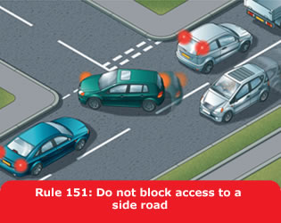

You MUST NOT
You MUST NOT drive on or over a pavement, footpath
or bridleway except to gain lawful access to property, or in the case
of an emergency.
Laws HA 1835 sect 72 & RTA 1988 sect 34
Adapt your driving to the appropriate type and condition of road you are on. In particular
Be considerate. Be careful of and considerate towards all types of road users, especially those requiring extra care (see Rule 204).
Safe driving and riding needs concentration. Avoid distractions when driving or riding such as
You MUST NOT smoke in public transport vehicles or
in vehicles used for work purposes in certain prescribed
circumstances. Separate regulations apply to England, Wales and
Scotland.
Laws TSf(EV) regs 2007, TSfP(W) regs 2007 & TPSCP(S) regs
2006
You MUST exercise proper control of your vehicle at
all times. You MUST NOT use a hand-held mobile
phone, or similar device, when driving or when supervising a learner
driver, except to call 999 or 112 in a genuine emergency when it is
unsafe or impractical to stop. Never use a hand-held microphone when
driving. Using hands-free equipment is also likely to distract your
attention from the road. It is far safer not to use any telephone
while you are driving or riding - find a safe place to stop first or
use the voicemail facility and listen to messages later.
Laws RTA 1988 sects 2 & 3 & CUR regs 104 &
110
There is a danger of driver distraction being caused by in-vehicle
systems such as satellite navigation systems, congestion warning
systems, PCs, multi-media, etc. You MUST exercise
proper control of your vehicle at all times. Do not rely on driver
assistance systems such as cruise control or lane departure warnings.
They are available to assist but you should not reduce your
concentration levels. Do not be distracted by maps or screen-based
information (such as navigation or vehicle management systems) while
driving or riding. If necessary find a safe place to stop.
Laws RTA 1988 sects 2 & 3 & CUR reg 104
In slow-moving traffic. You should

Residential streets. You should drive slowly and carefully on streets where there are likely to be pedestrians, cyclists and parked cars. In some areas a 20 mph (32 km/h) maximum speed limit may be in force. Look out for
Traffic-calming measures. On some roads there are features such as road humps, chicanes and narrowings which are intended to slow you down. When you approach these features reduce your speed. Allow cyclists and motorcyclists room to pass through them. Maintain a reduced speed along the whole of the stretch of road within the calming measures. Give way to oncoming road users if directed to do so by signs. You should not overtake other moving road users while in these areas.
Take extra care on country roads and reduce your speed at approaches to bends, which can be sharper than they appear, and at junctions and turnings, which may be partially hidden. Be prepared for pedestrians, horse riders, cyclists, slow-moving farm vehicles or mud on the road surface. Make sure you can stop within the distance you can see to be clear. You should also reduce your speed where country roads enter villages.
Single-track roads. These are only wide enough for one vehicle. They may have special passing places. If you see a vehicle coming towards you, or the driver behind wants to overtake, pull into a passing place on your left, or wait opposite a passing place on your right. Give way to vehicles coming uphill whenever you can. If necessary, reverse until you reach a passing place to let the other vehicle pass. Slow down when passing pedestrians, cyclists and horse riders.
Do not park in passing places.
Certain motorised vehicles do not meet the construction and
technical requirements for road vehicles and are generally not
intended, not suitable and not legal for road, pavement, footpath,
cycle path or bridleway use. These include most types of miniature
motorcycles, also called mini motos, and motorised scooters, also
called go peds, which are powered by electric or internal combustion
engines. These types of vehicle MUST NOT be used on
roads, pavements, footpaths or bridleways.
Laws RTA 1988 sects 34, 41a, 42, 47, 63 & 66, HA 1835,
sect 72, & R(S)A sect 129
Certain models of motorcycles, motor tricycles and quadricycles,
also called quad bikes, are suitable only for off-road use and do not
meet legal standards for use on roads. Vehicles that do not meet
these standards MUST NOT be used on roads. They
MUST NOT be used on pavements, footpaths, cycle
paths or bridleways either. You MUST make sure that
any motorcycle, motor tricycle, quadricycle or any other motor
vehicle meets legal standards and is properly registered, taxed and
insured before using it on the roads. Even when registered, taxed and
insured for the road, vehicles MUST NOT be used on
pavements.
Laws RTA 1988 sects 34, 41a, 42, 47, 63, 66 & 156, HA
1835, sect 72, R(S)A sect 129, & VERA Ss 1, 29, 31A, &
43A